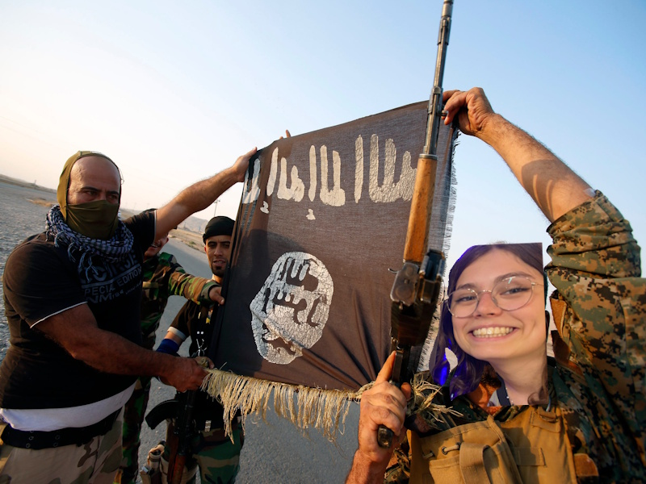
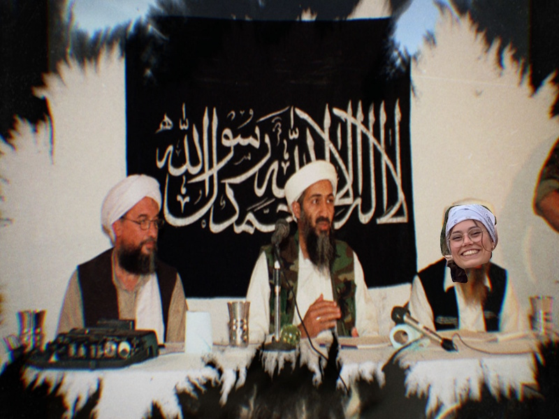
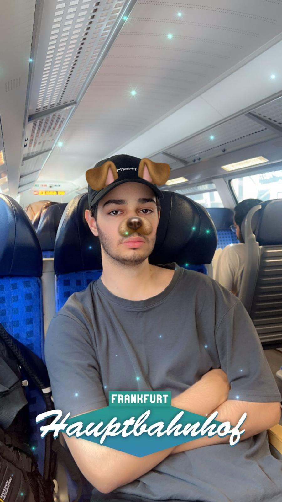
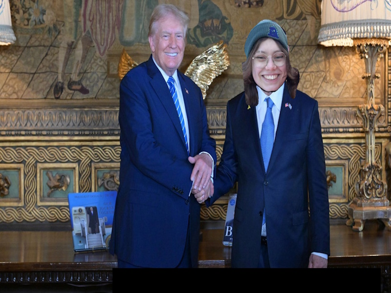
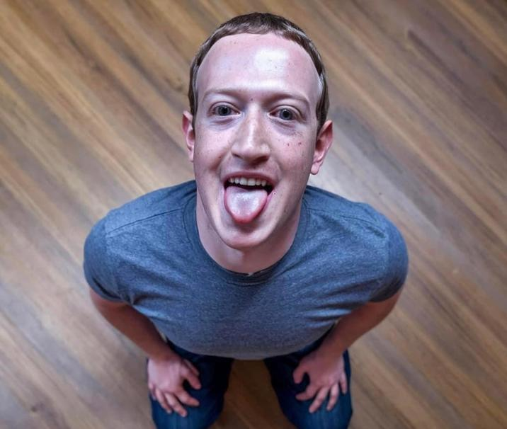
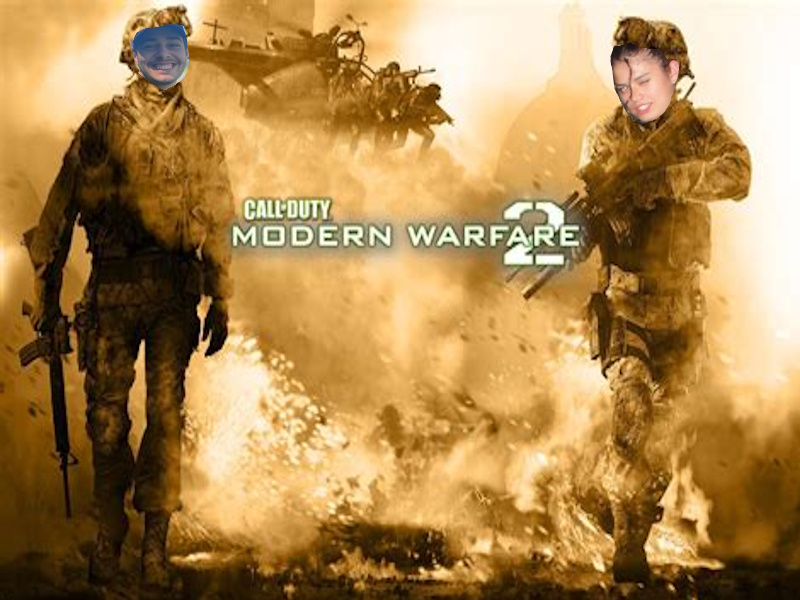

Hier ist Lara Pooch in ihrer zeit bei der Terror organisation Isis (REAL)

Lara ist auch sehr vertaut mit ihrem SEHR gutem freund Osama bin Laden oder wie sie ihn nennt "Sammy"

Hier ist ein Bild wie ich am Frankfurter Haubtbahnhof Geschpannt auf meine Fahrt Warte

Manche Vermuten sie ist eine Geheime CIA FBI und NSA agentin

Das ist ein Ki Generiertes Bild von Mark Zuckerberg Wie er auf seinen Knien Sizt

zuallerletzt können wir lara mit ihrem Complizen in ihrer schlimmsten taten beobachten.(man geht das hart)
Meine Damen (wie die schach figur) und herren(wie die Toiletten schilder) ich habe ihnen heute eine reihe von bildern gezeig welche mein leben in gefahr bringen werden, jedoch ist mir die warheit wichtiger als mein leben.
jeder sollte wissen was hinter der maske von Lara Pooch wirklich steckt.